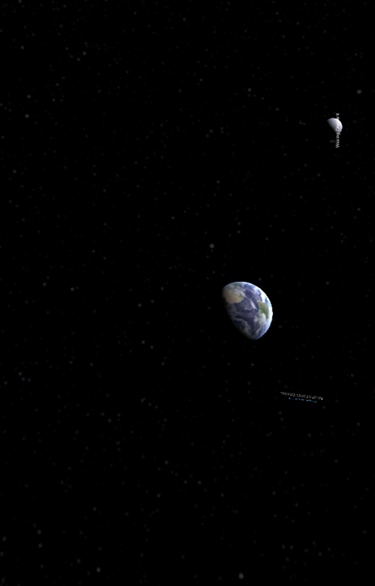
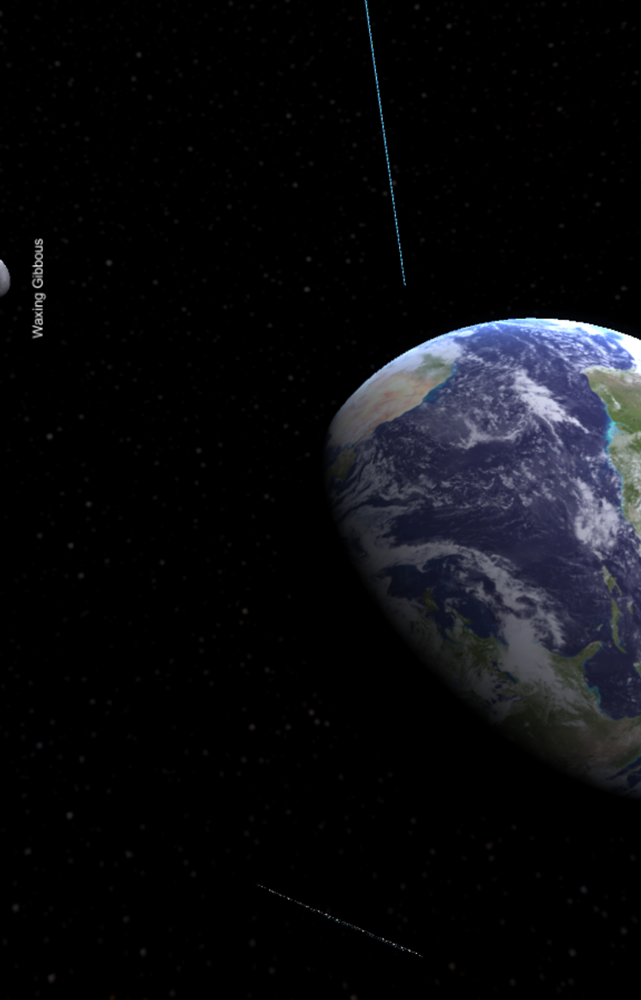
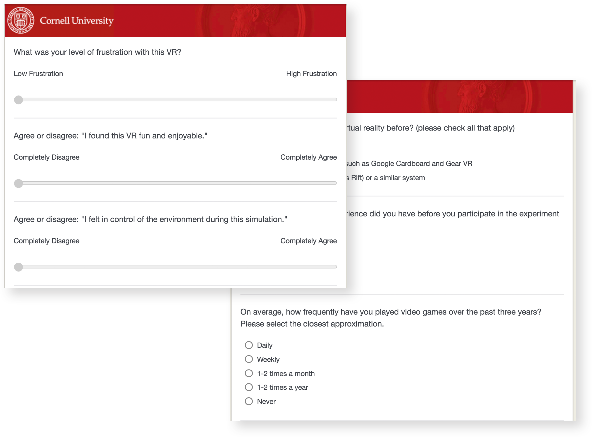
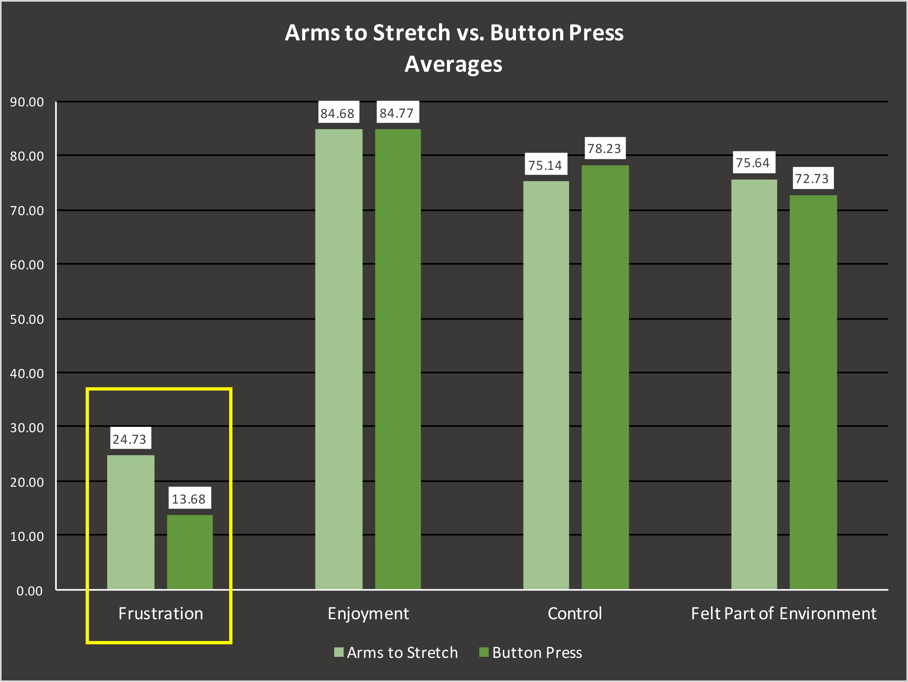
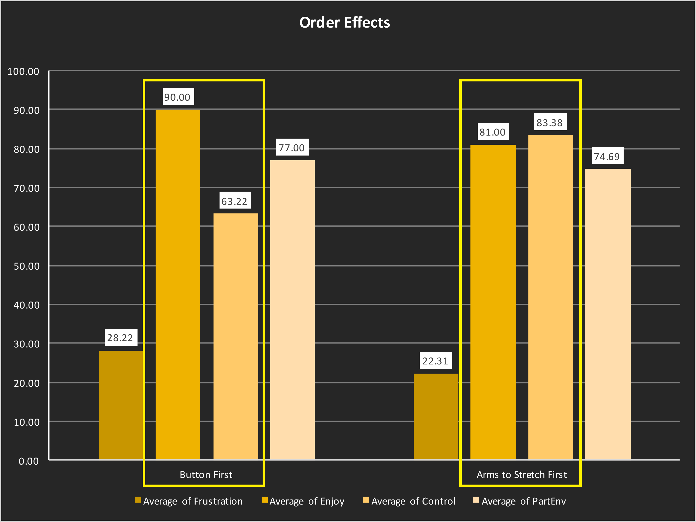
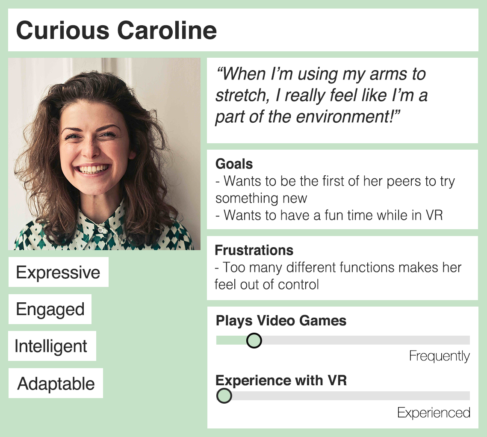
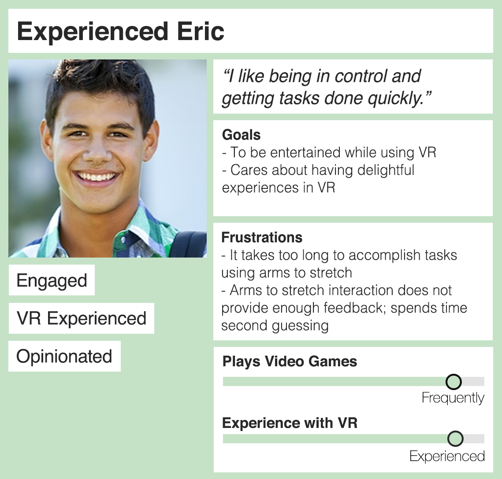
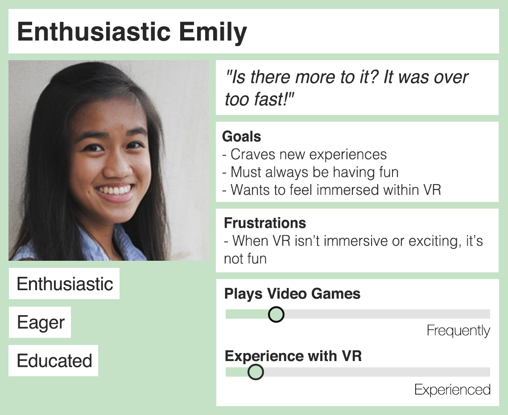
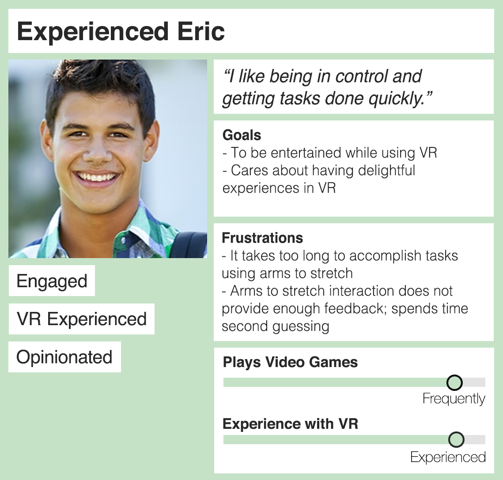
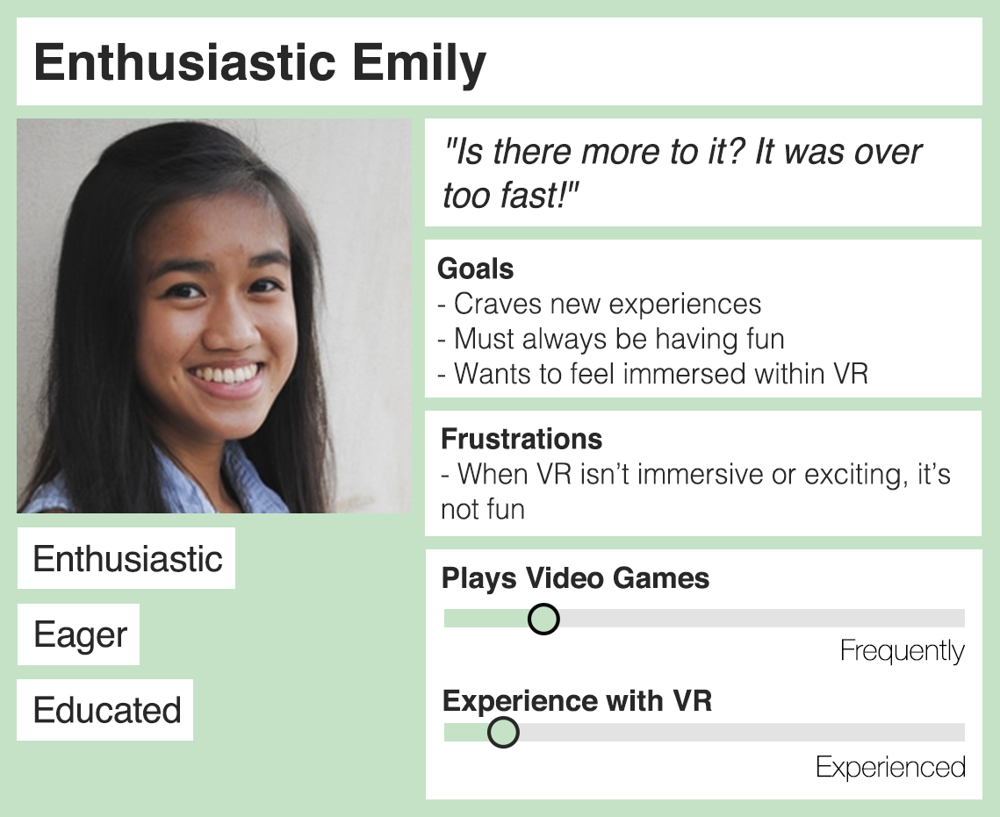

Moon Phases in Virtual Reality
This project explores the effects of two new user interactions within an educational Virtual Reality environment. Through the recruitment of 30 participants for experimental lab sessions, we aimed to understand the impact that these interactions have on user attitudes, emotions and enjoyment.
My Design Role
UX Researcher
The Team
2 UX Researchers
1 UX Engineer
Deliverables
Survey Results
Qualitative Findings
Quantitative Findings
Personas
Final Paper
Tools
Qualtrics
RStudio
Unity
Oculus
The 'Phases of the Moon' VR Environment
This environment aims to educate users on the different
phases of the moon. Users are able to interact with the Moon in ways that include
dragging into different phases and scaling in and out.
Our research
examines emotions and attitudes associated with each scaling interaction.
Scaled Out
This is the environment scaled out
Scaled In
This is the environment scaled in
The 2 New Interactions
The "Arms to Stretch"
Stretching arms motions to control scaling.
Arms close together - scale out
Arms stretched apart - scale in
The "Button Press"
Pressing the left and right grip buttons to control scaling.
Left grip - scale out
Right grip - scale in
Lab Sessions
Participants were placed into the Phases of the Moon VR environment and asked to complete a series of tasks using both scaling interactions.

Participant in a lab session
Participant in a lab session
Surveys
Surveys designed to measure frustration, enjoyment and previous experiences with VR and video games.
Qualtrics Survey
Interviews
Interviews were conducted at the end of each lab session to better understand what each participant liked and disliked about each interaction.
Findings
Preference for Button Press
Overall, our users preferred the button press interaction. On average, users were more frustrated with using an arm stretching motion to scale.
Graph depicting frustration levels
However, after accounting for order effects, we were able to identify noticeable differences in enjoyment and control levels. Overall, users felt higher levels of enjoyment and lower levels of control when the button press interaction was used first. Because the button press interaction is easier to use, and this led to higher levels of enjoyment. This which suggests the need for improved tutorials that will ease users into the environment. Using the button press interaction first also led to feeling less in control when transitioning to an arms to stretch interaction; this suggests that the arms to stretch interaction needs improvement.
Graph depicting order effects
Highlights
Users need better training and more instructions on how to operate within the environment
Users need a better indication of the degree of scaling applied when using their arms to stretch
Persona development
Our findings reveal four reoccurring types of users: curious, fixed, enthusiastic and experienced.
 



Next Steps
After conducting 30 VR lab sessions, we were able to identify 4 types of users. Each of these users have differing wants and needs due to varying degrees of familiarity with VR. Based off of our findings, the arms stretching interaction is preferable to a specific type of user. Further research will be necessary to validate a widespread need for an arms stretching interaction. Next phases of research should include (1) an improved arms stretching prototype – the existing prototype was jumpy at times, which interfered with user enjoyment and frustration levels (2) More feedback integrated into the interface to display how arm movements translate into movement within the virtual space – this is useful for novice users.